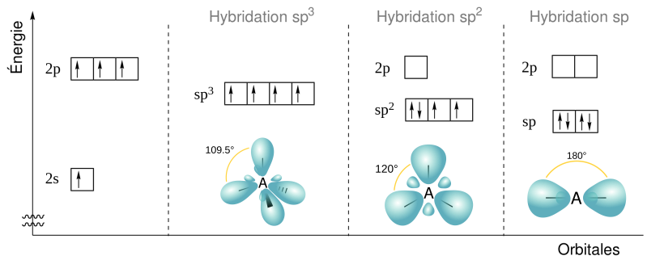

Densité d’états
Contents


Densité d’états#
A partir de la relation de dispersion, peuvent être dérivés la densité d’états et la masse effective.
fig, ax = plt.subplots ()
E = np.linspace (-1, 1, 200)
gE = (1 - (E/0.2)**2) ** (-0.5)
ax.plot (E, gE)
---------------------------------------------------------------------------
NameError Traceback (most recent call last)
Cell In [1], line 1
----> 1 fig, ax = plt.subplots ()
3 E = np.linspace (-1, 1, 200)
4 gE = (1 - (E/0.2)**2) ** (-0.5)
NameError: name 'plt' is not defined
Description du potentiel du réseau#
La fonction \(V (\vec{r})\) possède par construction la périodicité du réseau. Elle peut donc s’exprimer comme la superposition de fonctions périodiques dans chaque direction (\(x\), \(y\), \(z\)) de l’espace :
En effet, en première approximation, le potentiel périodique considéré comme une oscillation sinusoïdale de période \(a\). Les termes d’ordre supérieurs (\(n\ge 2\)) sont périodique de période \(a/n\), ce qui conserve la périodicité de période \(a\). Ces termes apportent des corrections de plus en plus fines à cette approximation jusqu’à faire tendre la série vers la fonction originale, éventuellement à la limite \(n\rightarrow \infty\) (c’est la décomposition en série de Fourier).
Dans sa version complexe (décomposition en ondes planes), cette série prend la forme suivante :